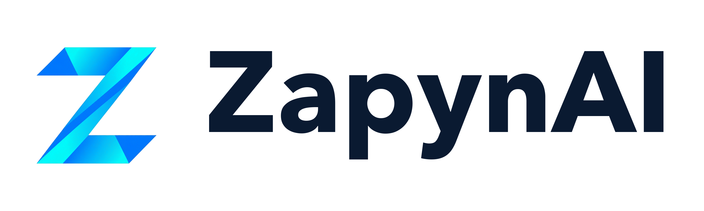
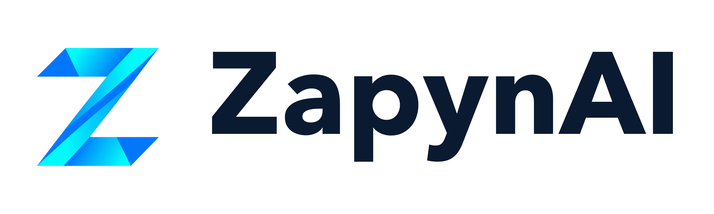

01 — Logotipo
Versiones del logotipo
Isotipo Z + wordmark, en sus tres versiones oficiales. Usa siempre los archivos originales, nunca recrees el logotipo.

Principal · fondo transparente
Versión oscura · #0A1A31

Versión clara · #FFFFFF
02 — Color
Paleta de colores
Morado y azul neón como acento de marca, sobre una base oscura. Mismos colores usados en la web de ZapynAI.
Morado principal
#7C3AED
Acentos, gradientes, CTAs
Morado claro
#A855F7
Hover, detalles, gradiente
Azul neón
#00D4FF
Acentos digitales, iconos
Azul corporativo
#0A1A31
Fondo logo oscuro, texto sobre claro
Negro de marca
#07070B
Fondo principal digital
Blanco
#FFFFFF
Fondo logo claro, texto sobre oscuro
03 — Tipografía
Tipografía recomendada
Dos fuentes con un mismo carácter geométrico y moderno: una para el logotipo, otra para producto y comunicación digital.
Logotipo
Avenir Next
Peso Bold/Heavy. Se usa exclusivamente para la palabra «ZapynAI» en el logotipo oficial. No usar para texto general.
Producto & Web
Inter
Pesos 400 a 800. Tipografía para la web, presentaciones, documentos y cualquier interfaz de producto.
04 — Espaciado mínimo
Zona de seguridad
Deja siempre un espacio libre alrededor del logotipo, como mínimo igual a la altura del isotipo (X). No coloques texto, imágenes ni bordes dentro de esa zona.
X = altura del isotipo. Aplica este margen mínimo en todos los usos del logotipo.
05 — Tamaños mínimos
Legibilidad garantizada
Por debajo de estos tamaños el logotipo pierde legibilidad. Evita reducirlo más.
| Elemento | Mínimo digital | Mínimo impresión |
|---|---|---|
| Logotipo horizontal | 120px de ancho | 30mm de ancho |
| Isotipo / Avatar | 32px | 10mm |
| Favicon | 16px | — |